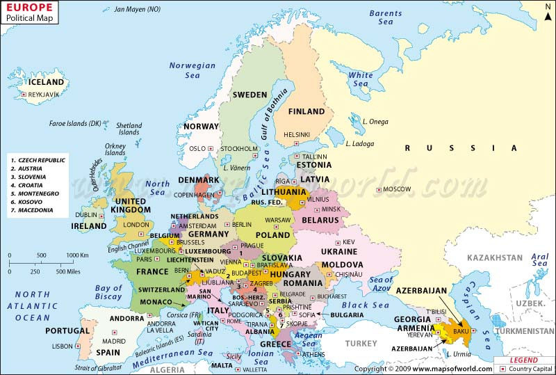

europe is the second smallest continent on the earth spread over an area of 10,180,000 sp km which makes up for 2% of the earth's total surface area it is the third most populated continent in the world with a total population of nearly 710,000,000 making up for about 11% of the world's population geographically europe is located in the western peninsula of the landmass of eurasia ocean in the west mediterranean sea in the south and caucasus mountains and black sea in the southeast
| EUROPE | ||
| Area: 10,180,000 km2 (3,930,000 sq mi) | ||
| Population 742,452,000 | ||
| Pop. Density 72.9/km2 (about 188/sq mi | ||
| Countries | ||
| Albania | Greece | Poland |
| Andorra | Hungary | Portugal |
| Armenia | Iceland | Romania |
| Austria | Ireland | Russia[5] |
| Azerbaijan | Italy | San Marino |
| Belarus | Kazakhstan | Serbia |
| Belgium | Kosovo | Slovakia |
| Bosnia and Herzegovina | Latvia | Slovenia |
| Bulgaria | Liechtenstein | Spain |
| Croatia | Lithuania | Sweden |
| Cyprus | Luxembourg | Turkey |
| Czech Republic | Macedonia | Ukraine[6] |
| Denmark | Malta | United Kingdom |
| Estonia | Moldova | Switzerland |
| Finland | Monaco | Vatican City |
| France | Montenegro | |
| Georgia | Netherlands | |
| Germany | Norway | |